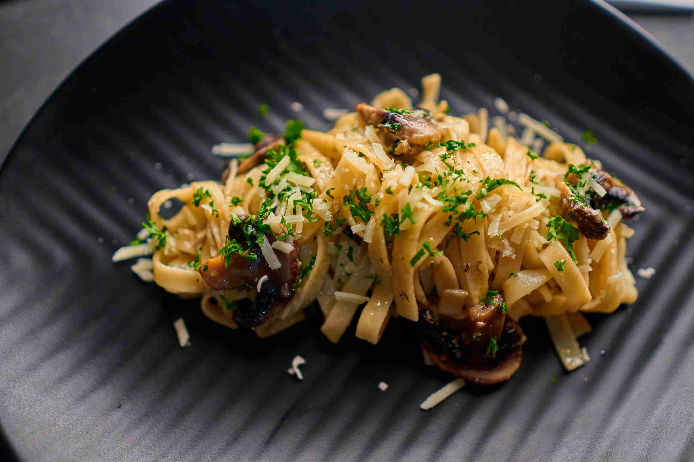
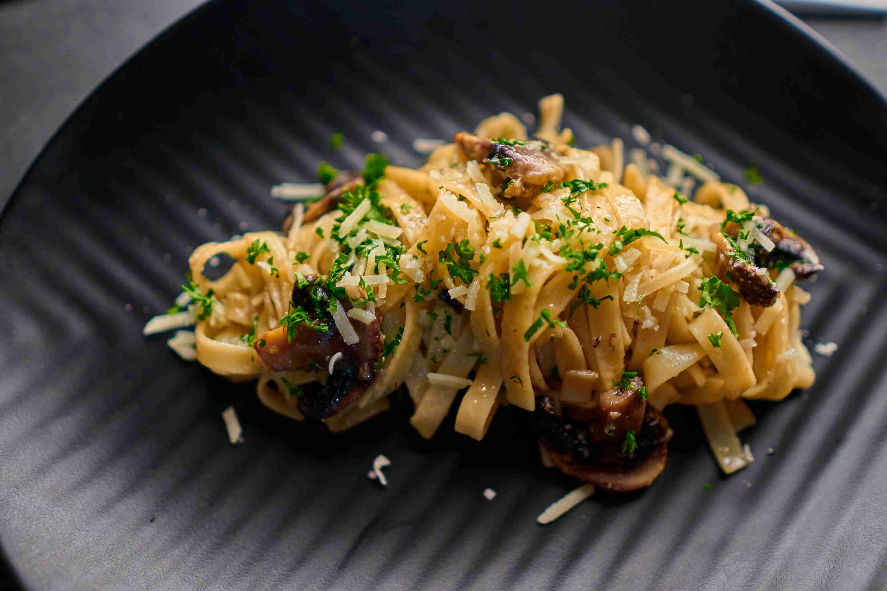

Step into our restaurant and embark on a culinary journey that celebrates the timeless harmony of rice and curry. Our menu boasts an exquisite array of carefully crafted dishes, where each grain of rice is a canvas for flavor and each curry a masterpiece of taste. Savor the simplicity and richness of our perfectly cooked rice, a canvas that absorbs the essence of our diverse curries. Whether it's the fragrant basmati or the hearty brown rice, each variety is treated with the utmost care to ensure a delightful texture and a neutral base that complements the robust flavors of our curries. Our curry selection is a symphony of spices and aromas, inspired by culinary traditions from around the world. From the aromatic and mildly spiced coconut curry to the fiery depths of our signature vindaloo, every dish is a testament to our commitment to authenticity and quality ingredients. Vegetarian delights, succulent meats, and fresh seafood are harmoniously united with our secret blend of spices, creating a tantalizing experience for your taste buds. Immerse yourself in the warmth of our restaurant, where the enticing aroma of simmering curries fills the air, and the sight of vibrant colors on your plate is as inviting as the flavors themselves. Join us in celebrating the timeless allure of rice and curry – a symphony of taste that transcends cultures and brings people together around the joy of good food.
Welcome to our restaurant, where culinary excellence meets the vibrant world of Kottu, a Sri Lankan street food sensation. Our Kottu is a symphony of flavors and textures – finely chopped roti sizzling on the griddle, mingling with fresh vegetables, succulent meats, and aromatic spices. Choose from tender chicken, savory beef, or wholesome vegetarian options. Each bite tells a story of tradition and innovation, honoring authentic flavors with our unique twist. Our chefs use only the freshest, highest quality ingredients, ensuring a harmonious blend of vibrant vegetables and premium meats. Savor the rich and aromatic notes of our Kottu, transporting you to the bustling streets of Sri Lanka. Immerse yourself in our restaurant's ambiance, where culinary artistry and cultural authenticity create an unforgettable dining experience. Join us on a journey of taste and tradition with our signature Kottu, capturing the essence of Sri Lankan culinary excellence in every bite.
Welcome to our restaurant, where the artistry of Italian cuisine takes center stage, and our pasta dishes are a testament to the timeless allure of this culinary tradition. Prepared with passion and precision, each plate tells a story of flavor and finesse. Immerse yourself in the tantalizing aroma as our skilled chefs craft the perfect al dente pasta, a canvas ready to be adorned with a symphony of sauces. From classic marinara to creamy Alfredo, our diverse range of sauces caters to every palate, ensuring a culinary journey that satisfies the most discerning taste buds. Indulge in our selection of pasta varieties, from the comforting embrace of spaghetti to the elegant twists of fettuccine and the delightful spirals of fusilli. Whether you prefer the simplicity of aglio e olio or the robustness of a hearty Bolognese, our menu offers a delightful array of options to suit every pasta lover's craving. Our commitment to quality is evident in every bite, as we source the finest ingredients to create a perfect marriage of flavors. Fresh herbs, premium meats, and market-fresh vegetables come together to elevate your pasta experience to new heights. As you savor the exquisite textures and rich flavors of our pasta dishes, let the ambiance of our restaurant transport you to the charming streets of Italy. Join us for an unforgettable dining experience, where the love for pasta meets the art of culinary craftsmanship.
Welcome to our sweet haven, where our dessert menu is a symphony of indulgence and artistry. Savor our signature creations, from velvety chocolate mousse to the timeless elegance of tiramisu. Our cheesecakes offer a perfect balance of rich textures and sophistication. For variety, try our dessert platters with mini delights, providing a satisfying finale. Pair them with specialty coffees or dessert cocktails for an immersive experience. Beyond taste, our desserts are visual masterpieces, reflecting our commitment to multisensory delight. Join us for a sweet celebration, where each plate is a grand finale of indulgence. Make your moments memorable at our restaurant, where dessert is an artful expression of craftsmanship, leaving a lingering sweetness in your memories.